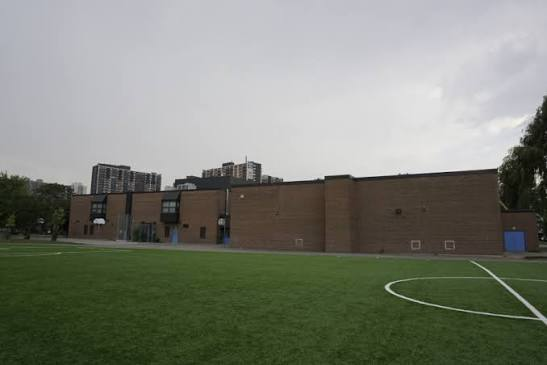

Source: Toronto District School Board
My entire life I have been attending school
For Kindergarten to grade 4, I went to Oakridge Junior Public School. I really liked this school and all the teachers. After grade 4 I went to the middle school that is right beside Oakridge, which is Samuel Hearne Middle School, I liked some of the teachers and also they have a basketball court which I still play at sometimes. I went to this middle school until grade 8, after that I started high school. I attend Danforth Collegiate Technical Institute in Toronto. I like this school and this is my second year in this school so I am in grade 10!
